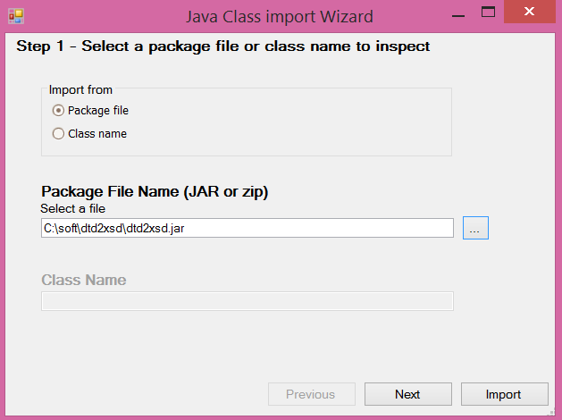
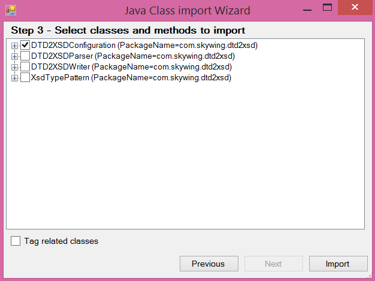

The Java Class Import Wizard allows you to create the necessary data types to interact with external classes, simply by selecting the .jar o .zip files with the corresponding set of Java classes. It automatically creates External Objects (EO) of External Object: Native Object type. Classes which can be automatically imported are plain old Java object classes. There are two ways to include external classes with the Java Class Import Wizard that we are seeing later in this document. One of them is through the Package file option, in which you enter the whole jar (in this case, all class dependencies are checked; therefore, errors may appear indicating that classes are missing and that the jar will not be imported successfully until they are added to the classpath). In general, this option is not selected in the sense that in the future you may not need these required classes. The other option is to import a specific class (Class name option) which is the one you're interested in. In both cases, the classes (or package) being imported have to be in the Classpath property. How to import an external jar or zip fileStep 1:From GeneXus, execute Tools/Application Integration/Java Class Import. In this example we have selected the Package file option (a jar file is going to be imported).  Step 2:Indicate a prefix for the EOs (optional) and a KB folder (optional) for them. Step 3:Select the classes you wish to import.  Checking the "Tag related classes" option causes all the classes related to the selected class to be imported. One EO will be created for each selected class; its name will be formed by the prefix entered and the name of the class. How to import from a class fileStep 1:From GeneXus, execute Tools/Application Integration/Java Class Import. In this example we have selected the Class name option. Note that the java package has to be specified, along with the class name (without extension). In order to import a class file you need to consider the java package of this class. In this example the Java package of the external .class is the following: As usual, it's necessary to add the corresponding path to the Classpath property. If the class being imported is contained under a jar or zip file, this file has to be added to the Classpath in GeneXus. Otherwise, if the class is not packed in a jar, you have to consider the location of the class in order to add this location to the Classpath property using the "Add Directory"...button. So, the Java classpath property has to be set as follows, adding the folder where the package is located: Step 2:Indicate a prefix for the EOs (optional) and a KB folder (optional) for them. Step 3:Select the classes you wish to import. This is the same as the example above. ConsiderationsAnyObject External Object TypeWhen the classes are imported, some parameters can be left with AnyObject Type. This happens because some classes have not been included. You have to confirm that you need these methods, and if they are not necessary, leave them with AnyObject Type. If you need them, you have two options: 1. Open the corresponding source (decompile them with DJ Decompiler, for example, or any similar tool), and check what class is referenced by the method in question. That class must be imported, and this is recursively done until the necessary methods are correctly defined in the external object. For further information on External Objects of the Native Object type see: External Object: Native Object Java Package Name UsageIf you use the Java package name property; make sure all external classes used by the Java Class Import Wizard have a package name; otherwise a compile error will occur.
com\packagename\SdtSampleExternalObject.java error: cannot access PropertyID
public PropertyID getExternalInstance( )
^
bad class file: .\com\packagename\PropertyID.class
class file contains wrong class: PropertyID
Please remove or make sure it appears in the correct subdirectory of the classpath.
failed ( error code=1)
|
| Backlinks | |
| Category:External object | External Object: Native Object |